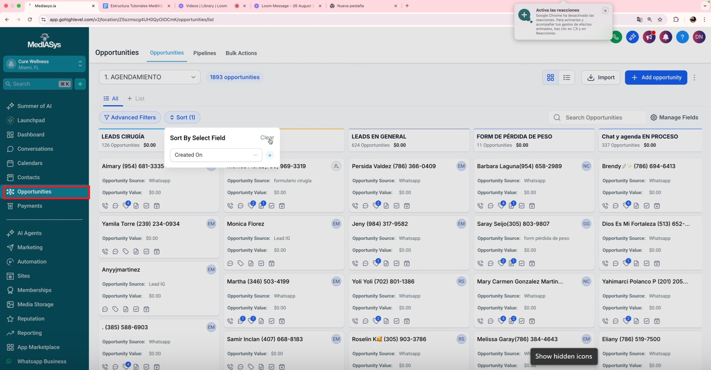
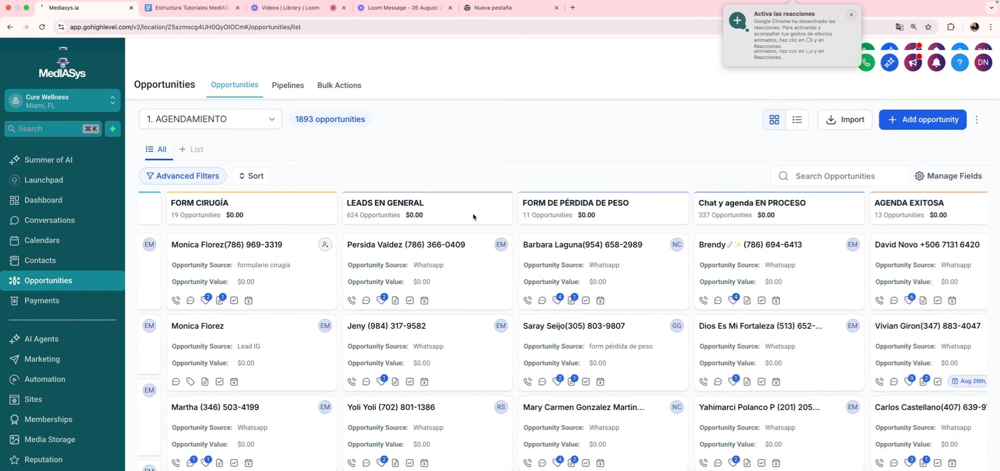
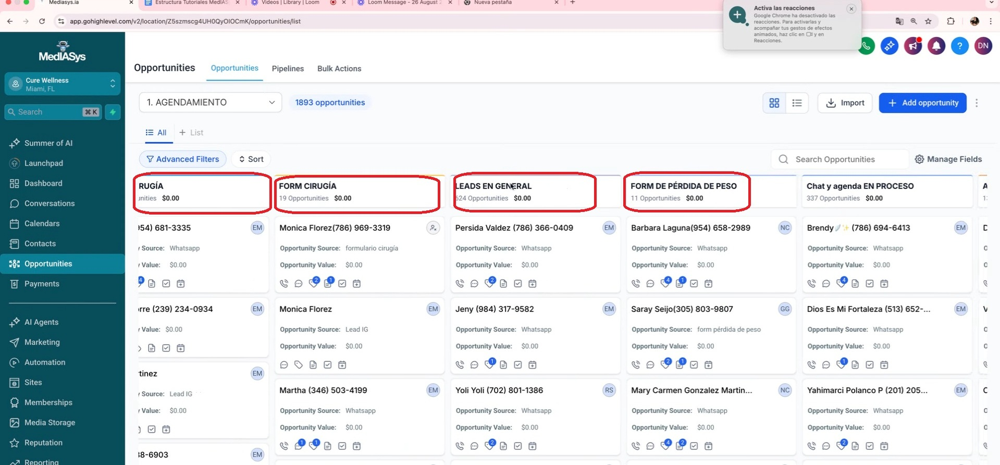
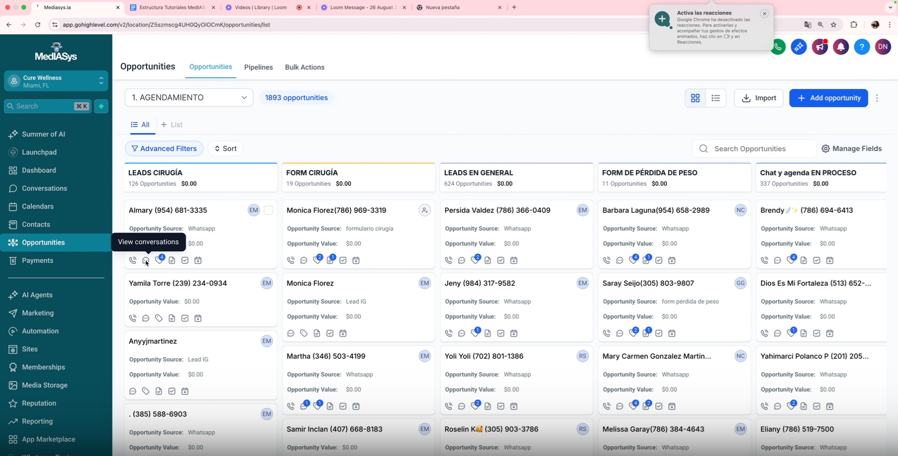
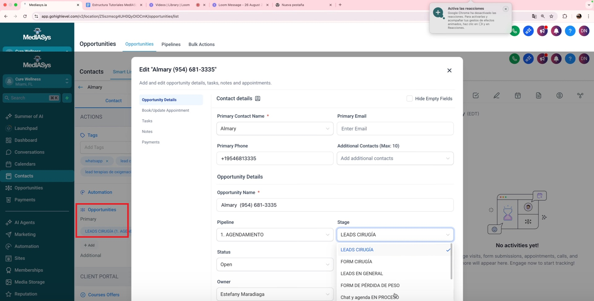
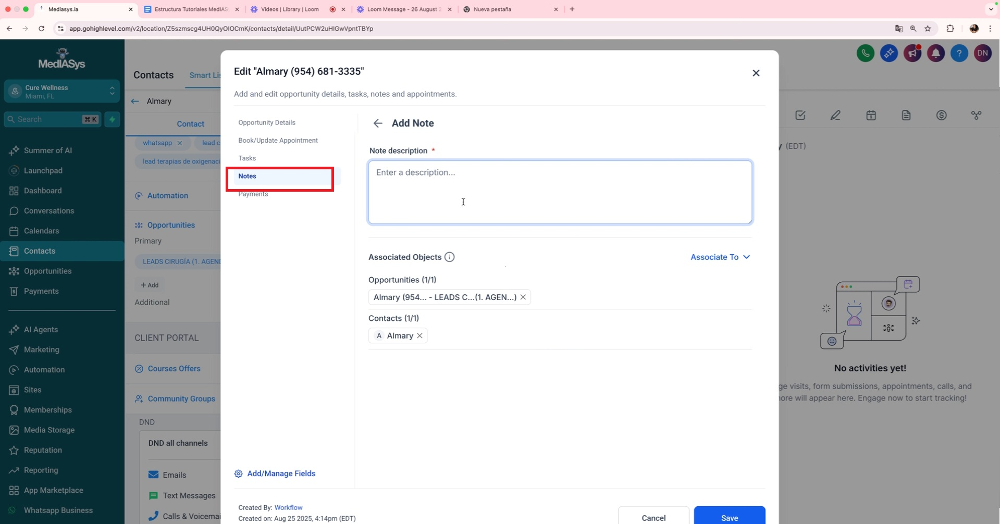
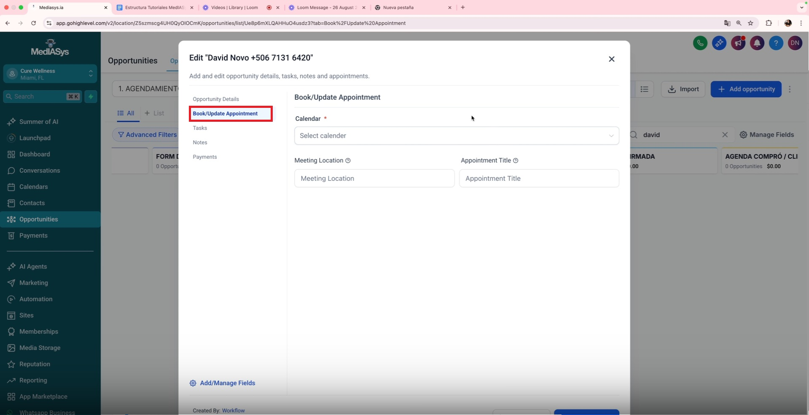
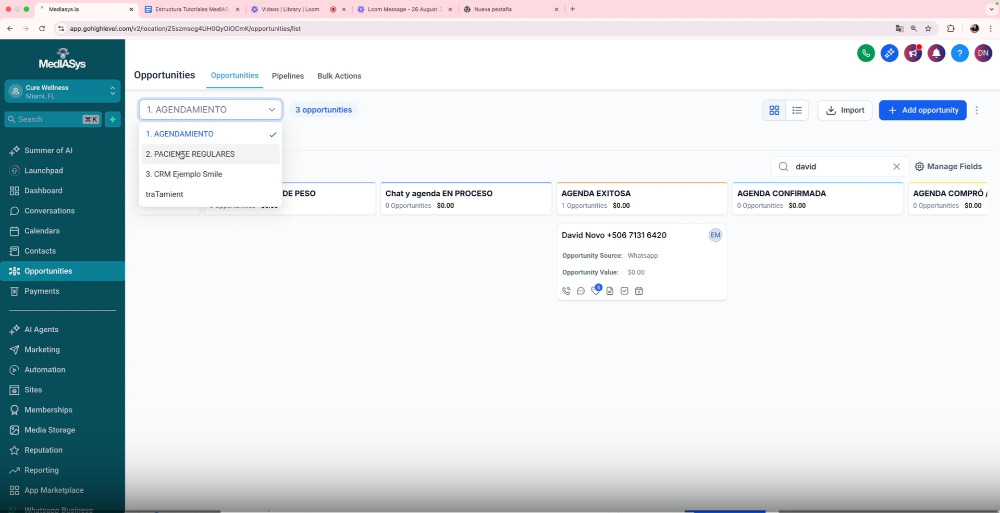
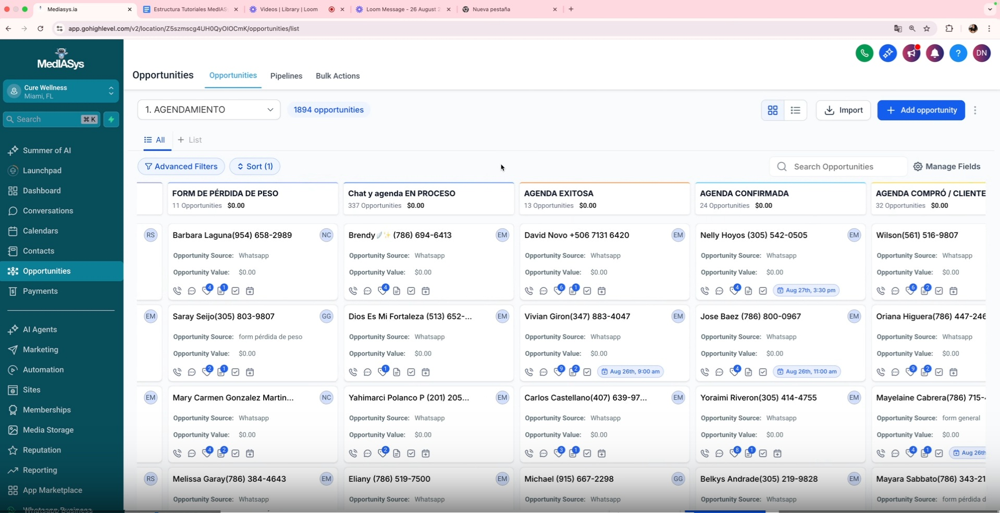

Procedimiento Operativo Estándar para el Uso del CRM
Objetivo
Este SOP proporciona una guía clara y concisa para gestionar oportunidades y clientes potenciales utilizando el sistema CRM según el negocio.
Introducción al CRM
(Tiempo de referencia: 0:02)

El CRM (Customer Relationship Management) es una herramienta para gestionar relaciones con clientes y leads. Permite llevar un control de los clientes potenciales interesados en servicios específicos.
Personalización del CRM
(Tiempo de referencia: 0:44)

- Cada clínica tiene un CRM personalizado según sus necesidades.
- Se realizan modificaciones continuas para optimizar el funcionamiento.
Gestión de Leads
(Tiempo de referencia: 1:23)

- Los leads pueden provenir de diferentes fuentes como cirugía, valoraciones, Instagram o WhatsApp.
- Es importante clasificar a los leads según la etapa en la que se encuentran.
Herramientas del CRM
(Tiempo de referencia: 2:23)

- Acceder a conversaciones para revisar interacciones previas con el lead.
- Cambiar la etapa del lead según su progreso en el proceso de agendamiento.
Cambiar la Etapa del Lead
(Tiempo de referencia: 4:28)

- Seleccionar el pipeline correspondiente y mover el lead a la etapa adecuada (ej. de cirugía a agenda exitosa).
- Utilizar la opción de arrastrar o hacer clic en el cuadro para cambiar la etapa.
Agregar Notas y Etiquetas
(Tiempo de referencia: 6:35)

- Agregar notas relevantes sobre el lead para mantener un registro claro.
- Utilizar etiquetas para clasificar y segmentar leads según características específicas.
Agendar Citas
(Tiempo de referencia: 9:08)

- Aunque se puede agregar una cita desde el CRM, se recomienda usar la sección de calendarios para una mejor gestión.
Seguimiento de Leads
(Tiempo de referencia: 12:01)

- Es crucial dar seguimiento a los leads para mantener la trazabilidad y medir resultados.
- Clasificar correctamente los leads para evitar pérdidas de información.
Personalización Adicional
(Tiempo de referencia: 13:02)

- Si se requieren etapas o clasificaciones adicionales, se puede solicitar personalización del CRM.